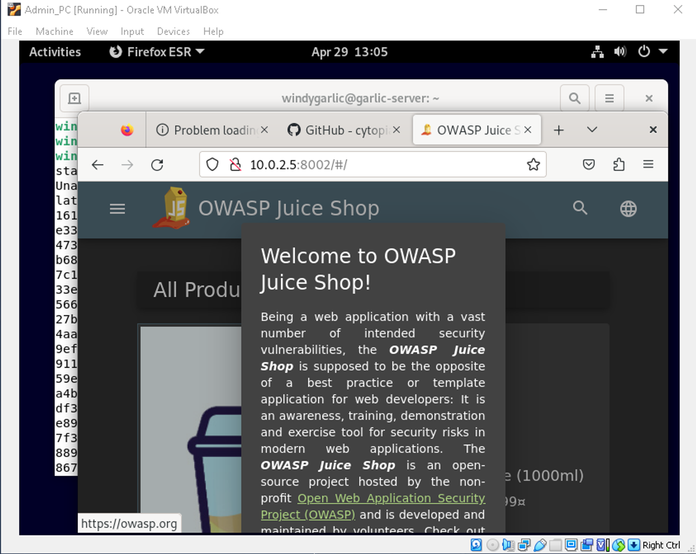

Here is a guide to set up quick, but effective penetration testing lab. We will start with a focus on Web App testing, but this lab can be expanded upon for network testing in the future.
- VM’s:
Make sure all the VM’s are in the same Nat Network
We will start with the application server, after installation all we need to do is set up ssh. We will be interacting with the server via the admin PC from now on.
We will use the admin PC to ssh into the App Server, from here we will want to install docker.
Once we have docker set up we can run juice shop with this command -
docker container run -d -e NODE_ENV=unsafe --restart=on-failure --name juice_shop -p 8002:3000 bkimminich/juice-shop And we now have OWASP Juiceshop running on port 8002 of our application server.
Next we want to set up DVWA by writing a docker-compose.yaml file to configure the database.
version: "3.9"
services:
db:
image: mysql:5.7
restart: always
volumes:
- db_data:/var/lib/mysql
environment:
MYSQL_ROOT_PASSWORD: damnvulnerable
MYSQL_DATABASE: dvwa
MYSQL_USER: dvwa
MYSQL_PASSWORD: damnvulnerable
dvwa:
depends_on:
- db
image: cytopia/dvwa:php-8.0-0.1
volumes:
- dvwa_data:/var/www/html
ports:
- "8001:80"
restart: always
environment:
MYSQL_HOSTNAME: db
MYSQL_USERNAME: root
MYSQL_PASSWORD: damnvulnerable
MYSQL_DATABASE: dvwa
volumes:
db_data: {}
dvwa_data: {}
We can run this with -
docker-compose -f docker-compose.yaml upWe now have DVWA running of port 8001 of the application server.
Just like that we can launch our Kali Linux machine and start attacking a network with a server running two vulnerable web applications. This network is competely set up now, so all we have to do is turn on the app server and we are good to go.
Happy Hacking!